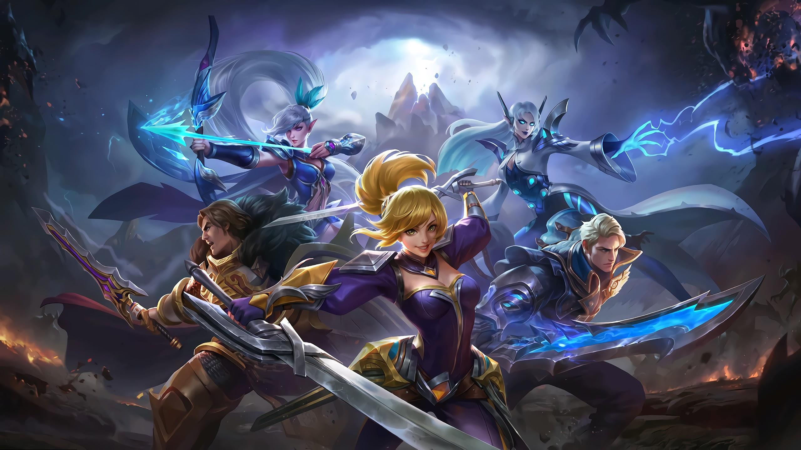
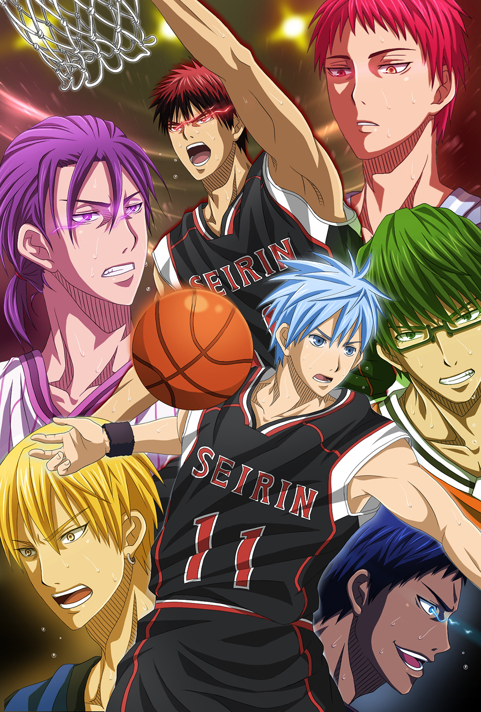

ABOUT ME
NAME:
Gerald B. Ohel
BIRTHDATE:
October 12, 2000
AGE:
22
Short History About me
Get to know a little about me. I was born and raised here in Nasipit, Agusan del Norte. Studied primary at Tagcatong Elementary School. My likes are watching anime, playing Mobile Legend, and sometimes I love to draw, I choose IT, because it was suggestion by my parents and during that time, I am still undecided what course to take and what career path to walk on. Therefore, I followed their suggestion.
Teenage Life
I spent my time more on playing games, hanging out with my friends and going to other places we planned on. Highschool was also the best years that I experienced. A lot of fun memories were created, new friends, new environment. Everything was different.
My Hobbies
INDOORS- Playing games
- Watching Movie
- Eating
- Hanging out with friends
- Beach
- Drinking alchohol
My Favorite Food

The lechon, from the Spanish word meaning "suckling pig," is the most popular specialty food among Filipinos, especially during town fiestas, Christmas celebrations (Pasko), family reunions and custom shot glasses gatherings. Originally, the term connotes Barry Kaye a roasted pig that truck accident lawyer has been skewered by a bamboo spear. Today, it refers to the method of roasting pigs, chickens, or cows clovis carpet cleaning using heat from charcoal.
My Favorite Game

Mobile Legends: Bang Bang is a mobile multiplayer online battle arena (MOBA) game developed and published by Moonton, a subsidiary of ByteDance.
Released in 2016, the game grew in popularity worldwide, most prominently in Southeast Asia, and has since crossed 1 billion downloads, with peak monthly players of 100 million.
In 2021, Mobile Legends: Bang Bang achieved an all-time gross of US$1 billion with 44 percent of its revenue emanating from outside Asia, making it the top mobile game of its genre with the most global appeal.
My Favorite Anime
AKuroko's Basketball (Japanese: 黒子のバスケ, Hepburn: Kuroko no Basuke) is a Japanese sports manga series written and illustrated by Tadatoshi Fujimaki. It was serialized in Shueisha's shōnen manga magazine Weekly Shōnen Jump from December 2008 to September 2014, with its chapters collected in 30 tankōbon volumes. It tells the story of a high school basketball team trying to make it to the national tournament.